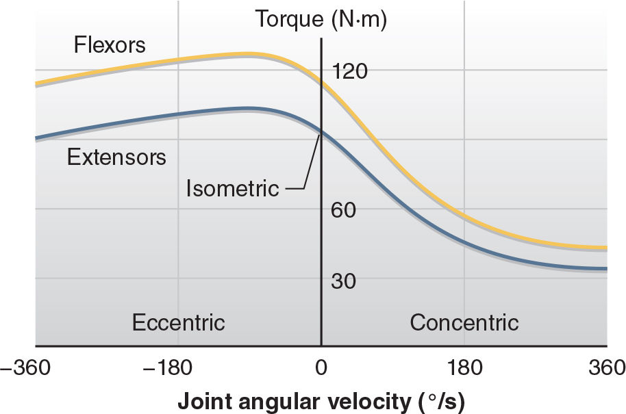

Biomechanics of Resistance Exercise(僅供術語對照) | 原文頁碼 p104–p173
本章以力學的語言討論阻力訓練:骨骼肌怎麼成組發力,槓桿、扭矩、衝量、功與功率怎麼作用在人體上,五類阻力來源各提供什麼樣的阻力型態,以及背部、肩部、膝部在負重下各自的脆弱處在哪裡。
每塊骨骼肌兩端都靠結締組織連在骨頭上,否則收縮再用力也拖不動任何節段。靠近身體中心的附著端叫起點(origin),遠離中心的叫止點(insertion)。若改採「固定端是起點、活動端是止點」的定義會出麻煩:直腿仰臥起坐時股骨較固定,髂肌的起點算在股骨上;換成抬腿動作,固定端又變成骨盆。兩端角色隨動作互換,所以教材採近端、遠端的傳統定義,最一致,也最便於測驗。
肌肉連到骨頭有兩種方式。肉質連接是肌纖維直接附在骨面上,多見於近端,覆蓋範圍大,把力量分散而非集中。纖維連接靠肌腱等結締組織與骨膜融合,纖維還延伸進骨內,連得非常牢。
幾乎每個動作都是肌羣合作的產物。直接產生動作的肌肉是原動肌(prime mover, agonist)。拮抗肌(antagonist)負責減速與停止,快速動作收尾時靠它剎車,保護韌帶與軟骨。投擲就是例子:肱三頭肌作為原動肌伸肘加速球,肘接近完全伸展時,肱二頭肌以拮抗肌身分收縮剎車,以免肘關節猛然撞擊。間接幫忙的肌肉叫協同肌(synergist)。穩定肩胛骨的肌肉,對所有手臂動作都是協同肌。跨兩個關節的肌肉還需要協同肌來抵銷副作用:股直肌跨髖、膝兩關節,收縮會屈髖伸膝,所以從蹲位站起時,必須有臀大肌這類髖伸肌同時收縮,壓住它造成的屈髖傾向。
人體動作主要靠骨骼的槓桿達成。先定義四個詞。支點(fulcrum)是槓桿的樞軸,通常是關節。槓桿(lever)是剛體,受力線不通過支點時會產生或抵抗旋轉。力臂(moment arm)是力的作用線到支點的垂直距離。扭矩(torque, moment)是力讓物體繞支點旋轉的程度,算法是力乘以力臂。等長收縮或恆速關節旋轉時,肌肉力量×肌肉力臂=阻力×阻力力臂。肌肉力臂與阻力力臂的比值就是機械優勢(mechanical advantage):比值大於 1.0 省力,小於 1.0 費力。
按支點位置分三類槓桿。第一類槓桿(first-class lever)裡,肌肉力與阻力分處支點兩側,三頭肌伸展即屬此類。第二類槓桿(second-class lever)兩者同側,而且肌肉力臂比阻力力臂長,小腿肌肉以腳掌為支點抬起身體(站姿提踵)屬於這類,機械優勢大於 1.0,省力。第三類槓桿(third-class lever)兩者同側但肌肉力臂較短,二頭肌彎舉正是此型,機械優勢小於 1.0,費力。人體帶動肢體的肌肉多數是第三類,所以肌肉內部產生的力遠大於身體對外物施加的力;例如阻力力臂是肌肉力臂 8 倍時,肌肉就得輸出 8 倍的力。這種高內部負荷正是肌肉與肌腱損傷的主要原因。實務上,槓桿分類取決於支點位置的認定,帶有主觀成分;理解機械優勢比背誦分類更重要,考題常在這個觀念上設計。
機械優勢在動作中不斷變化。膝不是純鉸鏈關節,旋轉軸在活動度內會移動;髕骨(patella,膝蓋骨)把股四頭肌腱撐離旋轉軸,讓股四頭肌的力臂不至於大幅縮短。少了髕骨,肌腱貼近軸心,力量表現立刻下滑。肘部沒有這種結構,屈肘的扭矩能力隨角度起伏。自由重量也一樣:阻力力臂取重物質心到關節的水平距離,彎舉到前臂成水平時力臂最長、所需扭矩最大;重物正好位於肘關節旋轉軸正上方或正下方時,力臂為零。
肌腱附著點位置造成個體差異。附著點離關節中心越遠,力臂越長、同肌力下扭矩越大,理論上能舉更重;代價是速度。同樣的肌肉縮短量,附著點較遠者只讓關節轉 34 度,一般構型能轉 37 度,節段角速度變低。要維持同樣的關節旋轉速度,肌肉必須以更高速度收縮,而依力-速度反比關係,收縮越快,能輸出的力量越小。所以遠端附著對力量舉這類慢速項目有利,對網球擊球這類高速項目反而喫虧。骨骼構造改不了,但你要知道成績建立在幾何之上。
描述動作一律以解剖學姿勢(anatomical position)為基準:身體直立、雙臂垂於兩側、掌心向前。矢狀面(sagittal plane)把人分左右,二頭肌彎舉在這一面進行;額狀面(frontal plane)分前後,啞鈴側平舉在這一面;橫斷面(transverse plane)分上下,啞鈴飛鳥在這一面。生物力學分析能幫你依專項動作的平面挑選練習,並做定量分析。針對同一關節、相似平面的練習,訓練特異性較高。
真正的專項動作很少只在單一面裡運動,所以練一個平面通常也會帶來交叉遷移:該平面的肌羣變強後,在其他平面也能輸出較大的力量。標準力量計畫常缺的是運動專項方向:肩內旋與外旋(投擲、發球)、膝屈曲(衝刺)、髖屈曲(踢球)、髖內旋與外旋(落地、轉向)、髖內收與外展(側切、變向)、軀幹旋轉(投擲、揮擊)。動態對應原則(dynamic correspondence)把訓練與專項扣在一起,內涵包括動作幅度與方向、主要產生力量的區域、用力的動態、最大力量產生的速率與時機、肌肉工作模式、節段間的相互關係。
力量最終要用數字來描述。牛頓第二運動定律 F = m × a 描述的是因果:有加速度就一定有合力。其延伸式,衝量-動量關係 F × Δt = m × Δv,更實用:左邊是衝量(impulse),右邊是動量(momentum)的變化。兩者都是向量(vector),大小與方向都要考慮。
看一組具體數字。想跳 40 公分,74 公斤的跳躍者起跳垂直速度必須達到 2.82 公尺/秒,需要 210 牛頓秒的衝量。這個數躲不掉,只能換方式「付清」:1000 牛頓淨力撐 0.210 秒、800 牛頓撐 0.263 秒、600 牛頓撐 0.350 秒,或 400 牛頓撐 0.525 秒,效果相同。教練的任務,是找出運動員在這張「付款計畫表」上哪一段付不出來,據此安排不同時間窗與負荷的測試。
功(work)是力乘以位移,也等於機械能的變化。機械能是勢能(potential energy,m × g × h)加動能(kinetic energy,½ × m × v²),g 取 9.81 m·s⁻²。將 60 公斤槓鈴推舉過頭,位移 0.541 公尺,對槓鈴做 318.43 焦耳的功;加 20 公斤舉相同距離,功升至 424.58 焦耳。功率(power)是做功的速率:0.815 秒完成 318.43 焦耳,即 390.71 瓦特。下放階段力仍為正、位移為負,功變成 −318.43 焦耳,是負功。單位請用國際單位制:牛頓、公尺、焦耳、秒、瓦特。
功與功率是標量(scalar),只有大小、沒有方向;衝量與動量是向量。用數字量化訓練負荷時,別忘了這個差別。峯值功率(peak power)也要小心:很多系統以 1000 赫茲取樣,所謂 642.63 瓦的「瞬時功率」只是搬動 1 毫米那一毫秒的速率。垂直跳的例子更直觀:推進階段做 295.57 焦耳、耗時 0.315 秒,平均功率 938.31 瓦;同一階段的峯值功率讀到 2040.68 瓦,對應的位移只有 2 毫米。比較平均功率纔有意義;單拿峯值功率宣稱,會被取樣窗口誤導。
旋轉動作另有一套對應量。扭矩=力×力臂,角位移以弧度(rad)計,1 弧度 = 57.3 度。用 0.30 公尺的前臂舉 25 公斤啞鈴,所需扭矩隨肘角變化:起始最小,肘 90 度附近約 74.3 牛頓米,全程平均約 59.1 牛頓米。角衝量是扭矩乘以時間,因果跟線性一樣:要轉得更快,就加大扭矩、拉長施力時間,或兩者都做。
本節列出會影響力量上限的因素,每一項都可能出題。
第一是神經控制。動員(recruitment)多少運動單位、放電頻率(rate coding)多快,直接決定力量。訓練前幾週的力量進步多半來自大腦學會運用肌肉,屬於神經適應;肌肉體積不一定改變。教練要提前告訴新手:停滯感不等於白費,堅持訓練會透過肌肥大等較慢的機制繼續進步。
第二是肌肉橫截面積(muscle cross-sectional area)。力量與橫截面積成正比,與體積無關。兩個臂圍相同的人,二頭肌力量大致相同,就算其中一人身高明顯較高。高個子肌肉較長、體積與體重較大,相對之下加速自身的能力較弱,這解釋了精英體操員身材普遍偏小。同樣道理:身材放大時,橫截面積隨線性尺寸的平方成長,體積隨立方成長,所以體型較大者的力量質量比天然較低;經典公式用「舉起重量除以體重的三分之二次方」做跨級別比較。力量質量比(strength-to-mass ratio)直接決定衝刺與跳躍的加速能力:體重增加 15%、力量只增加 10%,人反而變慢。
第三是肌纖維排列。肌肉組織每平方吋橫截面積能產生 23 到 145 磅(16 到 100 牛頓/平方公分)的力。範圍這麼大,部分是因為肌小節相對於肌纖維長軸的排列角度不同。羽狀角(pennation angle)是肌纖維與起點止點連線的夾角,0 度代表無羽狀;人體多數肌肉呈羽狀,但角度很少超過 15 度,而且會隨肌肉縮短而增大。羽狀角大的肌肉並聯肌小節(sarcomere)多、力量大,串聯肌小節少、縮短速度慢;角度小的反之。角度有遺傳成分,也可受訓練改變,這能解釋為何肌肉看起來一樣大,力量與速度卻差很多。
第四是肌肉長度。靜息長度下,肌動蛋白與肌球蛋白絲並排最完整,潛在橫橋位點最多,力量最大;拉太長或收太短,重疊都變少,力量都下降,這是長度-張力關係。被動拉長時,彈簧狀的肌聯蛋白(titin)繃緊,參與出力、幫助肌球蛋白絲排列整齊,也參與營養訊號傳導,可能與肌肥大有關。
第五是關節角度與收縮速度。肌肉的力只能以扭矩表現,力臂與肌肉長度都隨角度變動,所以扭矩在活動度內有強區弱區。力-速度曲線更陡:向心收縮越快、力量越小,低速端下降最陡;離心力隨速度上升,在約 90 度/秒(1.57 弧度/秒)達最大,之後才緩降。彎舉卡關時藉傾身「作弊」繼續舉起,利用的正是離心與等長收縮能比向心收縮出更多力的特性。三種肌肉作用要分清楚:向心收縮(concentric muscle action)是收縮力大於阻力、肌肉縮短,游泳與騎單車幾乎全是向心;離心收縮(eccentric muscle action)是收縮力小於阻力、肌肉被拉長,發生在每個練習的下放階段,痠痛與受傷風險較高;等長收縮(isometric muscle action)是力與阻力相等、長度不變,仰臥起坐時保持軀幹挺直靠的就是腹部等長收縮。
器材給的阻力並不一樣。阻力來源共五類,型態各異。
重力:重力(重量)= 質量 × 重力加速度。質量用公斤,重量用牛頓,兩個詞常被混用;磅在歷史上是力的單位,用它標示質量並不嚴謹。85 公斤槓鈴在地球上重 833.85 牛頓,搬到月球只剩 137.7 牛頓,手感約等於 14 公斤,質量卻沒變。重力的力臂取水平距離,所以自由重量的阻力矩全程變動,動作技術決定壓力落在哪些組織上:低槓深蹲把槓鈴放在上背偏低處,軀幹必須大幅前傾,重物離髖關節的水平距離遠、離膝近,髖伸肌(臀肌、膕旁肌)承擔大部分壓力;高槓深蹲槓位較高近頸,膝部阻力矩上升、髖部下降,兩者正好相反。配重式器械同樣靠重力,但透過滑輪、凸輪、鋼索與齒輪調控阻力方向與大小,優點是安全、易用、能設計出自由重量難以對抗的動作(下拉、髖內收外展、腿彎舉)。變半徑凸輪(cam)的訴求,是在肌肉強的地方給大阻力、弱的地方給小阻力。前提是動作必須以恆定的慢速角速度進行,實際很難做到;凸輪曲線通常也對不上人體真實的扭矩模式。
慣性:只在加速時出現,方向任意。舉起初期槓鈴要從零加速,原動肌實際承受的阻力大於槓鈴重量;接近頂端要減速防脫手,阻力又小於重量。動作越「爆發」,前重後輕越明顯。也因為慣性,爆發式練習可以用更重的重量,讓較弱的上半身藉助強壯腿臀加速帶起的動量繼續上升。對比式負荷訓練以高於與低於常規的負荷交替練習:重鉛球迫使肌肉在低速下出更大的力,輕鉛球練高加速度與較高出手速度;但更換器械負荷可能幹擾高度技巧性動作的動作模式,必須斟酌。
摩擦力:摩擦力阻力 = 摩擦係數 × 法向力。靜摩擦係數(static friction coefficient)恆大於動摩擦係數,啟動雪橇最難,啟動之後阻力大體恆定。量測數據:雪橇載重 44.8、90、136.2 公斤時,克服靜摩擦的力為 206、374、514 牛頓(μs 為 0.47、0.42、0.39),維持滑動的力為 154、289、415 牛頓(μd 為 0.35、0.33、0.31)。表面材質與濕度會改變摩擦係數,戶外阻力難以穩定重現,但水平阻力是槓鈴難以提供的,雪橇推拉仍極有價值。
流體阻力:流體阻力 = 常數 × 活塞相對速度,速度越快阻力越大。來源有表面阻力(流體流過表面的摩擦)與形狀阻力(前後壓力差),迎風橫截面積大幅影響形狀阻力。液壓器械起步能快,速度一高就被「掐住」,速度範圍變窄,而且並非宣稱的等速。關鍵缺陷是它通常沒有離心階段:不是同一塊肌肉向心、離心交錯,而是原動肌與拮抗肌輪流向心,各肌羣趁對方工作時休息。對跑步、跳躍、投擲這類離心參與大的項目,訓練特異性打了折扣。
彈性:彈性阻力 = 常數 × 拉伸量,拉越長越重。起點輕、終點重,跟人體肌羣在活動度末端力量明顯下降的模式正好相反;肌肉最能出力的行程段,彈力帶最鬆。用彈力帶加負重做垂直跳就是反例:起跳瞬間臀肌與股四頭肌最能出力,帶子張力卻最小;滯空時張力最大,主要作用是把人往地面拉、加快落地,膝與落地結構壓力升高。選器材前,先把器材的阻力曲線和動作的力量曲線疊在一起看。
先給大局:阻力訓練是低風險活動,受傷率約每 1000 小時 4 例。團隊運動受傷率最高,跑步與有氧居中,騎單車、步行與阻力訓練最低。一項大學美式橄欖球研究統計,每 100 名球員每季僅有 0.35 例與阻力訓練相關的傷害,佔全季因傷缺席時間的 0.74%。風險低,不代表四個部位可以不管。
背部。人類的脊柱由椎骨一塊塊疊成,椎骨間夾著彈性椎間盤,站、坐、走時都在承受壓縮;四足動物像吊橋纜繩那樣懸掛脊柱,我們沒有這個待遇。雙手或雙肩承重且軀幹前傾時,重物與腰椎的垂直距離很大,而豎脊肌(erector spinae)作用線到椎間盤的垂直距離只有約 5 公分(2 吋),機械優勢極低。背部肌肉必須輸出的力常超過舉起重量的 10 倍,這些力擠壓相鄰椎骨之間的椎間盤。85% 到 90% 的椎間盤突出發生在 L4 與 L5 之間,或 L5 與 S1 之間。研究顯示,以中立背而非圓背提舉,能更有效地減少 L5/S1 的壓縮力與韌帶張力;脊柱自然 S 形(胸椎略後凸、腰椎略前凸)時椎間盤受力最均勻,腰部過度前凸會擠壓椎間盤背側,同樣增加破裂風險。阻力訓練時腰椎應維持適度前凸。
第二道防線是腹內壓(intra-abdominal pressure)。膈肌與腹部深層肌肉同時收縮,腹部液體幾乎不可壓縮,形成受壓的「流體球」(fluid ball),從前方支撐脊柱,明顯降低豎脊肌所需的力與椎間盤壓力。關鍵在於:產生腹內壓不必憋氣。瓦氏動作(Valsalva maneuver)關閉聲門、把軀幹變成剛性腔室,支撐感最強,但胸腔壓力也隨之上升,靜脈迴流變難、血壓短暫升高。大多數阻力訓練建議用「氣道暢通的鼓壓」;接近極限與極限強度的試舉,才由經驗充足、懂得規避昏厥風險的運動員考慮使用。舉重腰帶確實能提高腹內壓,但全程佩戴會讓負責產壓的深層腹肌缺乏訓練刺激,形成依賴後突然摘帶反而危險。保守用法:不直接壓迫下背的動作不戴;直接壓背的動作,輕重量組不戴;接近極限與極限組才戴。許多世界級舉重員從不戴腰帶。
肩部。肩關節活動度為全身之冠,但關節盂淺,穩定性明顯不如髖關節那類真正的球窩關節。活動度與風險是一體兩面。穩定靠關節盂脣、關節囊、韌帶與肌肉,其中肩袖肌羣(rotator cuff,含岡上肌、岡下肌、肩胛下肌、小圓肌)與胸肌對於把肱骨頭穩在原位特別重要。骨骼、肌腱、韌帶、滑囊排列緊密,動作超出正常使用範圍時就容易互相夾擠,引發肌腱炎與鄰近組織發炎退化。臥推與肩上推舉務必先做輕重量熱身,並讓計畫均衡照顧肩部所有主要動作方向。
膝部。膝夾在大腿與小腿兩根長槓桿之間,屈伸幾乎只在矢狀面發生,訓練中的阻力扭矩基本落在它的正常旋轉面內,真正的弱點是髕骨與周邊肌腱。髕骨的功能正是把股四頭肌腱撐離膝旋轉軸、加大力臂與機械優勢;負荷、訓練量或恢復安排不當時,髕腱反覆承受高負荷會發炎,出現壓痛與腫脹。引發肌腱炎的是缺乏循序漸進的量與強度安排,不是練習本身。護膝方面:預防受傷的證據不足,但厚重護膝靠彈簧效應能直接讓深蹲多舉約 25 磅(110 牛頓),「只是心理安定」的看法是錯的;它也可能帶來皮膚問題與髕骨軟化。要用,就限制在負荷最大的組。
肘與腕。阻力訓練中這兩個關節的損傷非常零星,過頂舉重的風險遠小於投擲與網球發球等過頂運動。青少年要注意的是肘關節後側與撓骨遠端骨骺(生長板)的過度使用;一項對 500 名運動醫學專家的調查顯示,多數人認為沒有必要在骨骺閉合前全面禁止阻力訓練。
下表集中本章的死數字與死規則,背到能默寫。
| 主題 | 必背數字或規則 |
|---|---|
| 機械優勢 | = 肌肉力臂 ÷ 阻力力臂;大於 1.0 省力、小於 1.0 費力;人體多數骨骼肌 < 1.0(第三類最常見),肌肉內部受力可達外部阻力的數倍(例:力臂比 8 倍 → 肌力 8 倍)。 |
| 三類槓桿例 | 第一類:三頭肌伸展;第二類:站姿提踵(省力);第三類:二頭肌彎舉(最常見)。教材示例機械優勢 = 5 cm ÷ 40 cm = 0.125。 |
| 附著點與關節轉角（圖 p119） | 肌腱附著位置因人而異；附著遠者力臂較長、同肌力下扭矩較大。圖示例：相同肌肉縮短量下，附著較近的（a）關節轉 37°，附著較遠的（b）僅轉 34°；單位收縮轉動較少、動作較慢。 |
| 單位與常數 | g = 9.81 m·s⁻²;1 弧度 = 57.3 度;力牛頓、距離公尺、功焦耳、時間秒、功率瓦特(1 W = 1 J/s)。 |
| 公式 | F = m × a;F × Δt = m × Δv(衝量=動量變化);勢能 = m × g × h;動能 = ½ × m × v²;功率 = 功 ÷ 時間;重力 = m × g。 |
| 跳躍示例 | 74 公斤跳 40 公分 → 起跳垂直速度 2.82 m/s、衝量 210 N·s;可拆為淨力 1000 N×0.210 s / 800 N×0.263 s / 600 N×0.350 s / 400 N×0.525 s。跳 0.55 公尺需起跳速度 3.285 m/s。 |
| 功與功率示例 | 60 公斤×0.541 m → 318.43 J;加 20 公斤同距離 → 424.58 J;0.815 s 完成 → 390.71 W;下放階段功 = −318.43 J(負功)。 |
| 峯值功率陷阱 | 1000 Hz 取樣下,瞬時功率只描述 1 毫米等級位移的速率;垂直跳推進階段 295.57 J ÷ 0.315 s = 平均 938.31 W,峯值功率 2040.68 W 僅對應 2 毫米位移。 |
| 向量與標量 | 衝量、動量、力、速度是向量;功與功率是標量(無方向)。 |
| 肌肉產力密度 | 最大收縮每平方吋橫截面積 23 到 145 磅(16 到 100 牛頓/平方公分)。 |
| 羽狀角 | 很少超過 15 度,隨肌肉縮短而增大;大角度多並聯肌小節,力量大、速度慢;小角度有利速度。 |
| 力-速度關係 | 向心:速度越快力量越小,低速端下降最陡。離心:力量隨速度上升,約 90 度/秒(1.57 弧度/秒)最大,之後緩降。等長介於兩者之間。 |
| 力量質量比 | 經典比較公式 = 舉起重量 ÷ 體重^(2/3);面積隨尺寸平方、體積隨立方成長,體型較大者力量質量比低;體重 +15%、力量 +10% → 加速變慢。 |
| 質量與重量 | 85 公斤槓鈴地球上重 833.85 N,月球 137.7 N(手感約 14 公斤);月球重力約為地球 1/6,30 公斤壺鈴在月球手感約 5 公斤。 |
| 阻力公式 | 摩擦:阻力 = k × 法向力,且靜摩擦係數恆大於動摩擦係數;流體:阻力 = k × 速度;彈性:阻力 = k × 拉伸量。 |
| 雪橇摩擦數據 | 載重 44.8/90/136.2 kg → 啟動力 206/374/514 N(μs 0.47/0.42/0.39);維持力 154/289/415 N(μd 0.35/0.33/0.31)。 |
| 受傷率 | 阻力訓練約每 1000 小時 4 例;大學美式橄欖球每 100 球員每季 0.35 例,佔因傷時間 0.74%;團隊運動最高,跑步有氧居中,單車、步行、阻力訓練最低。 |
| 背部 | 85%–90% 椎間盤突出在 L4-L5 或 L5-S1;豎脊肌力臂約 5 cm,背肌出力常超過舉重 10 倍;中立背優於圓背,腰椎保持適度前凸。 |
| 護膝 | 厚重護膝靠彈簧效應平均增加深蹲約 25 磅(110 牛頓);預防受傷證據不足,僅限最大負荷組。 |
| 中文術語 | English | 一句話定義 |
|---|---|---|
| 起點 | origin | 肌肉靠近身體中心的近端附著點。 |
| 止點 | insertion | 肌肉偏遠端的附著點。 |
| 原動肌 | agonist (prime mover) | 直接產生動作的肌肉。 |
| 拮抗肌 | antagonist | 減速或停止動作、穩定並保護關節的肌肉。 |
| 協同肌 | synergist | 間接協助動作或抵銷副作用的肌肉。 |
| 支點 | fulcrum | 槓桿的樞軸點,通常是關節。 |
| 力臂 | moment arm | 力的作用線到支點的垂直距離。 |
| 扭矩(力矩) | torque (moment) | 力使物體繞支點旋轉的程度,力乘力臂。 |
| 機械優勢 | mechanical advantage | 肌肉力臂與阻力力臂的比值。 |
| 第一類槓桿 | first-class lever | 支點位於肌肉力與阻力之間。 |
| 第二類槓桿 | second-class lever | 肌肉力臂較長、機械優勢大於 1 的槓桿。 |
| 第三類槓桿 | third-class lever | 肌肉力臂較短、機械優勢小於 1,人體最常見。 |
| 羽狀角 | pennation angle | 肌纖維與肌肉起點止點連線的夾角。 |
| 肌小節 | sarcomere | 肌原纖維的收縮基本單位,串並聯影響力與速度。 |
| 肌聯蛋白 | titin | 具機械感測特性的彈簧狀絲,離心時參與出力與排列。 |
| 向心收縮 | concentric muscle action | 收縮力大於阻力,肌肉縮短。 |
| 離心收縮 | eccentric muscle action | 收縮力小於阻力,肌肉被拉長。 |
| 等長收縮 | isometric muscle action | 收縮力等於阻力,肌肉長度不變。 |
| 衝量 | impulse | 力乘以時間,造成動量變化。 |
| 動量 | momentum | 質量乘以速度,向量。 |
| 功 | work | 力乘以位移,等於機械能變化,標量。 |
| 功率 | power | 單位時間做的功,標量。 |
| 峯值功率 | peak power | 單一取樣窗口內的最高瞬時功率。 |
| 矢狀面 | sagittal plane | 將人體分為左右的切面。 |
| 額狀面 | frontal plane | 將人體分為前後(腹背)的切面。 |
| 橫斷面 | transverse plane | 將人體分為上下的切面。 |
| 動態對應原則 | dynamic correspondence | 讓訓練符合專項動作方向、用力區域與時機的原則。 |
| 凸輪 | cam | 配重器械中改變力臂長度的變半徑元件。 |
| 靜摩擦係數 | static friction coefficient | 啟動接觸面滑動所需的摩擦比,恆大於動摩擦係數。 |
| 形狀阻力 | form drag | 流體流過物體前後形成的壓力差阻力。 |
| 瓦氏動作 | Valsalva maneuver | 關閉聲門憋氣加壓,提高整個軀幹剛性。 |
| 腹內壓 | intra-abdominal pressure | 膈肌與深層腹肌收縮在腹腔形成的支撐壓力。 |
| 流體球 | fluid ball | 腹部液體與組織在肌肉收縮下形成的不可壓縮受壓腔。 |
| 肩袖肌羣 | rotator cuff | 岡上肌、岡下肌、肩胛下肌與小圓肌,穩定肱骨頭。 |
| 力量質量比 | strength-to-mass ratio | 力量與被加速身體質量的比值,決定加速能力。 |

表6.1 五種阻力來源的阻力模式對照(整理自教材本節)。
| 阻力來源 | 公式/規則 | 阻力型態 | 代表器材或動作 | 主要限制 |
|---|---|---|---|---|
| 重力 | 重量 = m × g;力臂取水平距離 | 全程隨關節水平距離變動,起末力臂可為零 | 槓鈴、啞鈴、壺鈴 | 只在垂直向下方向提供阻力,力矩分佈受技術影響 |
| 慣性 | 慣性力 = m × a | 動作初期大於重量、末期小於重量,爆發動作時差距更大 | 高翻、抓舉、高拉 | 阻力難以精確量化,速度控制影響安全 |
| 摩擦力 | 阻力 = k × 法向力;靜摩擦 > 動摩擦 | 啟動最難,啟動後大致恆定 | 皮帶或煞車片式阻力健身車、雪橇推拉、腕彎舉器 | 表面條件改變,阻力難以穩定重現 |
| 流體阻力 | 阻力 = k × 速度 | 越快越重,速度被限制在中間區間 | 液阻、氣阻器械,水中運動 | 通常無離心階段,對跑跳投特異性差 |
| 彈性阻力 | 阻力 = k × 拉伸量 | 起點最輕、終點最重,與人體力量曲線相反 | 彈力帶、彈簧器械 | 最強肌力段得不到強阻力;調整範圍有限 |
表6.2 三種肌肉作用對比(整理自教材)。
| 類型 | 力與阻力關係 | 肌肉長度 | 例 |
|---|---|---|---|
| 向心收縮 | 收縮力 > 阻力 | 縮短 | 游泳、騎單車幾乎全為向心;舉起階段 |
| 離心收縮 | 收縮力 < 阻力 | 被拉長 | 所有練習的下放階段;痠痛與受傷風險高;約 90 度/秒力量最大 |
| 等長收縮 | 收縮力 = 阻力 | 不變 | 仰臥起坐時腹部維持軀幹挺直 |
Q1.(是非題)人體多數使肢體繞關節旋轉的骨骼肌,機械優勢小於 1.0。
Q2.(選擇題)月球重力約為地球 1/6。標示 30 公斤的壺鈴在月球使用,手感約當地球上的多少公斤?(A)5 (B)15 (C)30 (D)180
Q3.(選擇題)肌肉拉長超出靜息長度時,一般認為哪一條絲會參與出力並幫助肌球蛋白排列?(A)肌球蛋白 (B)肌動蛋白 (C)肌聯蛋白 (D)肌小節
Q4.(選擇題)棒球投球出手瞬間,前導臂屬於哪一類槓桿?(A)第一類 (B)第二類 (C)第三類 (D)第四類
Q5.(選擇題)下列哪一類槓桿的機械優勢大於 1.0、屬於省力構造?(A)三頭肌伸展的第一類 (B)站姿提踵的第二類 (C)二頭肌彎舉的第三類 (D)等長收縮
Q6.(是非題)推動訓練雪橇時,維持滑動所需的力比啟動瞬間更大。
Q7.(選擇題)85% 到 90% 的椎間盤突出發生在哪兩個節段之間?(A)T12-L1 (B)L2-L3 (C)L4-L5 與 L5-S1 (D)頸椎段
Q8.(是非題)以 1000 Hz 取樣系統報告的峯值功率,描述的是單一取樣窗口(如 1 毫秒)內做功的速率。
Q9.(選擇題)纏繞厚重護膝能讓深蹲舉起更多重量的主要原因是?(A)穩定膝關節、降低恐懼 (B)本體感覺提示 (C)彈簧效應直接協助膝伸展 (D)提高關節溫度
Q10.(是非題)液壓阻力器械與槓鈴一樣,在同一肌羣上交錯提供向心與離心阻力。
先把上一節題目做完,再回頭對照本頁。
1. Q1.(是非題)人體多數使肢體繞關節旋轉的骨骼肌,機械優勢小於 1.0。 …
Ans:○ — 多數屬第三類槓桿,肌肉力臂短於阻力力臂,內部受力大於對外輸出力。
2. Q2.(選擇題)月球重力約為地球 1/6。標示 30 公斤的壺鈴在月球使用,手感 …
Ans:A — 重量變成 1/6,質量不變,手感約為 30 ÷ 6 = 5 公斤。
3. Q3.(選擇題)肌肉拉長超出靜息長度時,一般認為哪一條絲會參與出力並幫助肌球蛋白 …
Ans:C — 肌聯蛋白(titin)具機械感測特性,離心收縮時繃緊並參與出力。
4. Q4.(選擇題)棒球投球出手瞬間,前導臂屬於哪一類槓桿?(A)第一類 (B)第二 …
Ans:C — 肘屈伸帶動前臂的動作,肌肉力臂短於阻力力臂,屬第三類;人體並不存在的「第四類」是誘答。
5. Q5.(選擇題)下列哪一類槓桿的機械優勢大於 1.0、屬於省力構造?(A)三頭肌 …
Ans:B — 第二類槓桿肌肉力臂比阻力力臂長,所需肌力小於體重。
6. Q6.(是非題)推動訓練雪橇時,維持滑動所需的力比啟動瞬間更大。 …
Ans:✕ — 靜摩擦係數恆大於動摩擦係數,啟動最難、啟動後阻力大致恆定。
7. Q7.(選擇題)85% 到 90% 的椎間盤突出發生在哪兩個節段之間?(A)T1 …
Ans:C — 教材明載最下方兩節腰椎(L4、L5)及 L5 與 S1 之間,與舉重時下椎間盤承受的高壓縮力一致。
8. Q8.(是非題)以 1000 Hz 取樣系統報告的峯值功率,描述的是單一取樣窗口 …
Ans:○ — 例如 642.63 瓦只是搬動 1 毫米的速率,不代表整個動作的持續輸出。
9. Q9.(選擇題)纏繞厚重護膝能讓深蹲舉起更多重量的主要原因是?(A)穩定膝關節、 …
Ans:C — 彈簧效應平均可讓深蹲多舉約 25 磅(110 牛頓),教材已點名糾正「只是心理作用」的說法。
10. Q10.(是非題)液壓阻力器械與槓鈴一樣,在同一肌羣上交錯提供向心與離心阻力。 …
Ans:✕ — 液阻器械通常無離心阻力,改為原動肌與拮抗肌輪流向心收縮。